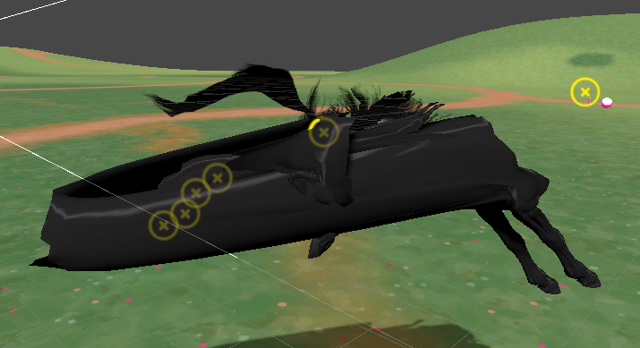
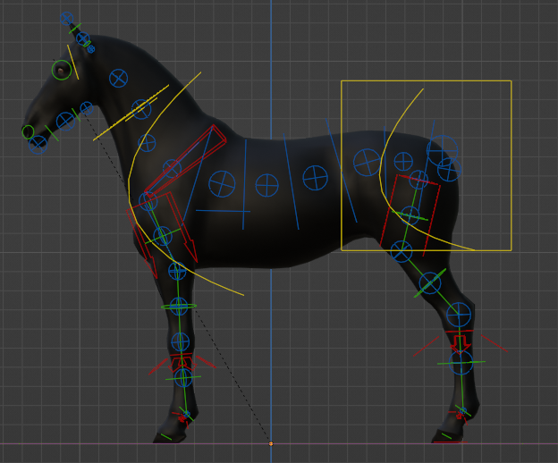
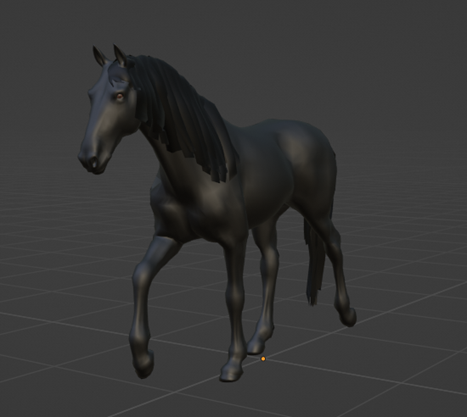
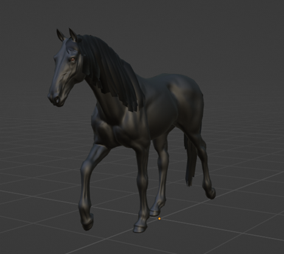
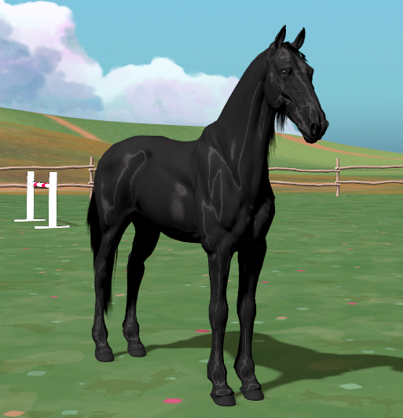

Sari Halonen
Peliohjelmoinnin opiskelija Kotkasta
Projektin aloitus
Aloitin projektin importtaamalla hevosmallin animaatioineen ja tekstuureineen Unityyn ja implementoin yksinkertaisen liikkumissysteemin. Tämän jälkeen mallinsin yksinkertaisen esteen ja aloin miettimään miten voisi helpoiten toteuttaa esteen puomien tippumisen mahdollisimman "realistisesti". Päädyin lisäämään hevosen jalkoihin colliderit ja esteen puomille omansa. Puomi ei varsinaisesti ole kiinni missään, se on vain asetettu esteessä olevien kiinnikkeiden päälle ja se tippuu jo pienestä kosketuksesta. Ensimmäinen ongelma jonka kohtasin esteiden kanssa oli se, miten pelaaja pystyi potkimaan puomeja sen jälkeen, kun ne olivat jo maahan tippuneet. Tämä ei muuten olisi ongelma, mutta asetuksista riippuen ne joko lähtevät salamannopeasti taivaanrantaa kohti tai hidastavat pelaajan liikkumista. Ratkaisuksi tähän kehittelin koodin, joka poisti pelaajan ja puomin välisen collisionin, kun puomiin oli kerran osuttu. Näin puomi jäi esteeltä tiputtuaan paikoilleen, eikä estä pelaajan liikkeitä tai lähde lentämään kentältä.
3D-mallin visuaalinen päivitys
Olen jo jonkin aikaa halunnut opetella 3D-sculptausta ja ns. game-ready 3D-mallin tekoa. Vapaa-ajalla olen jonkin verran Zbrushilla sculptaillut mutta kyseinen ohjelma on ilman opiskelijalisenssiä melko hinnakas, varsinkin kun sitä käyttää vain muutaman kerran, sekä myös melko työläs opeteltava. Tätä projektia varten otin tavoitteeksi saada Blenderillä aikaiseksi mallin, josta voisin baketa (engl. baking) normal mapin korkearesoluutioisesta mallista ja käyttää sitä alhaisen resoluution mallissa tuomaan lisää yksityiskohtia. Blenderissä pystyin helposti aiemman kokemuksen avulla tekemään korkearesoluutioisesta mallista pienempiresoluutioisen version käyttäen pelkästään neliöitä. Tämä prosessi vaati hieman opettelua, mutta neliöiden käytössä on se etu, että resoluutiota voi helposti lisätä tarvittaessa.
Mallinnuksen jälkeen oli vuorossa animointi ja päädyin käyttämään Blenderin Rigify-lisäosan sisältämää hevosen luurankoa animointiin. Oman luurangon tekeminen olisi kyllä kiinnostanut, mutta se on melko työläs prosessi erityisesti, jos haluaa huolella tehdä oikeasti hyvän luurangon. Rigify ei oikeasti ole tarkoitettu pelien tekoon ja siinä on todella paljon luita, mikä tekee siitä todennäköisesti hieman turhan raskaan. Lisäksi luurangon hierarkian kanssa tuli ongelmia, kun animaatiot piti saada siirrettyä Unityyn.

En ollut aluksi varma, mistä ongelmat johtuivat ja ongelman lähteen selvittämiseen kului yllättävän paljon aikaa. Blenderissä kaikki näytti aina olevan kunnossa ja ongelmat ilmenivät vain Unityyn vietäessä, joten se vaikeutti ongelman diagnosointia huomattavasti. Luiden hiararkiaa päädyin tutkimaan tarkemmin vasta useamman tunnin troubleshoottaamisen jälkeen ja sekin oli sattumaa, että törmäsin videoon, jossa oli hieman vastaavanlaista ongelmaa, joskin ei kuitenkaan ihan sitä mitä etsin. Viereisessä kuvassa on nähtävissä kuvankaappaus Unitystä, jossa osa luurangosta liikkuu ihan oikein eteenpäin, mutta osa jää liian taakse jumittamaan tai ei liiku ollenkaan. Ongelma ei kuitenkaan koskenut läheskään kaikkia animaatioita, mikä ei taas omalta osaltaan ainakaan helpottanut ongelman selvittämistä. Ongelma kaiken lisäksi tuntui toisinaan korjautuvan vain muuttamalla Unityn import-asetuksia, mutta näin ei kuitenkaan ollut. Olikin todella huojentavaa löytää ongelmaan oikea ratkaisu monen tunnin selvitystyön jälkeen.
Hevosmalli Rigify-luurankonsa (armature) kanssa Blenderissä.
Päivitetty hevosen 3D-malli ilman normal mappia. Klikkaa kuva suuremmaksi.
Päivitetty hevosen 3D-malli normal mapin kanssa. Klikkaa kuva suuremmaksi.
Custom shader
Halusin hevoselle edes jotenkin realistisesti toimivan valoefektin turkkiin. Törmäsin sattumalta Youtube-videoon, jossa esiteltiin Unity Asset Storessa myynnissä olevaa pakettia eikä edes varsinaisesti liittynyt aiheeseen. Tässä videossa pisti silmään kuitenkin melko realistisesti toimiva valaistus nimenomaan videolla näkyvässä hevosmallissa ja aloin pohtimaan ja etsimään tietoa miten voisin vastaavan toteuttaa itse. Meinasin vaihtaa render pipelinen HDRP:hen (High Resolution Render Pipeline), sillä siinä on sisäänrakennettuna ihan Unityn omissakin shaddereissa "anisotropic specular highligts. Tämän efektin olin todennut tiedonhaun kautta tuottavan sellaisen efektin millaista olin etsimässä. HDRP ei ollut kuitenkaan omaan käyttööni sopiva ja onnistuinkin löytämään Youtubesta erään käyttäjän itse tekemän URP:lle (Universal Render Pipeline) tarkoitetun shader subgraafin, joka tuotti haluamani lopputuloksen. Shader graafin johon subgraafi asetetaan jouduin toki itse luomaan ja se vaati hieman säätöä, mutta onnistuin kuitenkin pääsemään omaa silmää miellyttävään lopputulokseen.
Päivitetty malli vietynä Unityyn custom shaderin kanssa. Klikkaa kuva suuremmaksi.
Harja ja häntä
Harjaa ja häntää en halunnut manuaalisesti animoida, joten aluksi kokeilin käyttää Unityn cloth-simulaatiota. Se toimi jotenkin mutta oli todella vaikea käyttää. Samassa video josta sain inspiraation valaistukseen, oli käytetty Magica Cloth -nimistä asset pakettia Unityn storesta. Olen joskus jostain Humble Bundlesta tullut sen hankkineeksi, joten päätin seuraavaksi kokeilla sitä. Simulaation asettaminen häntään sekä harjaan on huomattavasti helpompaa kuin Unityn cloth-simulaation ja vaikka asetukset ovat vielä ihan mitä sattuu ja collidereitakin puuttuu ainakin kaulasta, toimii hännän ja harjan simulaatio suhteellisen hyvin.
Video
Videossa näkyy hyvin, miten hevosesta heijastuu valo custom shaderin johdosta. Videossa on esitelty myös tähän mennessä tehdyt animaatiot, joista osa on hieman keskeneräisiä. Harjan ja hännän simulaatio on nähtävissä myös, harja menee kaulasta läpi toistaiseksi, sillä kaulassa ei ole yhtäkään collideria. Olin ne kerran asettanut, mutta exporttasin mallin Blenderistä vahingossa pelkkänä luurankona, joten kaikki Unityn komponentit jotka oli itse 3D-malliin liitetty, menivät siinä samalla.
Ympäristö on toteutettu sekin Humble Bundlesta ostetulla asset paketilla. Ympäristön mallintamiseen menisi turhaan aikaa varsinkin, kun saatavilla on todella paljon erittäin kivan näköisiä paketteja. Omistan useamman fantasia-/cartoon-tyylisen paketin, joten piti vain valita parhaiten oman projektin tyyliä vastaava. Paketin nimi on Stylized Fantasy : Forest Environment ja nykyään se on vanhentunut eikä siihen ole saatavilla päivityksiä. Jotkin materiaalit eivät toimi oikein, mutta muokkaamalla Unityn omia materiaaleja puuttuvista sai tarpeeksi kivan näköisiä.
Mitä seuraavaksi
Seuraavaksi vuorossa olisi animaatioiden viimeistely ja sen jälkeen pääsenkin työstämään peliin jotain varsinaista estehyppymekaniikkaa. Esteitä tulisi mallintaa useita lisää, mutta ne ovat onneksi melko simppeleitä ja nopeita tehdä. Lisäksi haluaisin muuttaa sen miten hevoshahmo kääntyy maan suuntaisesti; tällä hetkellä se on erittäin tökkiväistä vaikkakin se toimii kyllä ihan niinkuin kuuluukin.
Käytetyt tutoriaalit ja lähteet
| Lähde | Tutoriaalin käyttötarkoitus |
|---|---|
| 'jinho Lee' Youtube-video | Anisotropic Specular URP sub graph |
| 'Pierrick Picaut' Youtube-tutoriaali | Blenderin animation curves |
| 'Blender Secrets' Youtube-tutoriaali | Baking normal map from multires modifier |